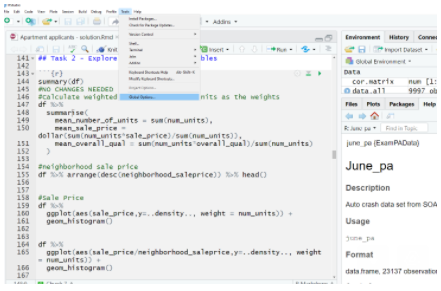
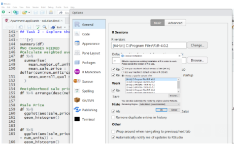

4 Getting started
An interactive demonstration of one of the most important theorems in statistics: the sampling distribution of the mean converges to a normal distribution regardless of the underlying population distribution (given sufficient sample size).
4.1 Extract Transform Load (ETL)
The datasets for this book are available on HuggingFace under https://huggingface.co/supersam7. You can load them in R using the reticulate package and the Python datasets library.
reticulate::use_python("C:/Users/casti/AppData/Local/Programs/Python/Python313/python.exe", required = TRUE)
library(reticulate)
Sys.setenv(RETICULATE_UV_ENABLED = "0")
# Point reticulate at a Python with the datasets library installed.
# You can also use a virtualenv or conda env if preferred.
py_config()## python: C:/Users/casti/AppData/Local/Programs/Python/Python313/python.exe
## libpython: C:/Users/casti/AppData/Local/Programs/Python/Python313/python313.dll
## pythonhome: C:/Users/casti/AppData/Local/Programs/Python/Python313
## version: 3.13.2 (tags/v3.13.2:4f8bb39, Feb 4 2025, 15:23:48) [MSC v.1942 64 bit (AMD64)]
## Architecture: 64bit
## numpy: C:/Users/casti/AppData/Local/Programs/Python/Python313/Lib/site-packages/numpy
## numpy_version: 2.2.3
##
## NOTE: Python version was forced by use_python() functiondatasets <- import("datasets")
# Example: travel insurance data
ds <- datasets$load_dataset("supersam7/travel_insurance")To load any dataset listed below, replace the dataset name in the string. For example:
This chapter tells you how to install the necessary software on your computer. For updates and curated resources, visit PredictiveInsightsAI.com.
4.2 Installing R
Download it from here: https://cran.r-project.org/mirrors.html
You can easily switch between both of them after installation.


4.3 Installing RStudio
Just as MS Word creates documents, RStudio creates R scripts and other documents. This is the tool that helps you to write the code. Download the free edition of RStudio Desktop and instal it at your selected location.
Download it from here: https://rstudio.com/products/rstudio/download/
Also try their new Positron editor! I have just began using it, and is very good so far.